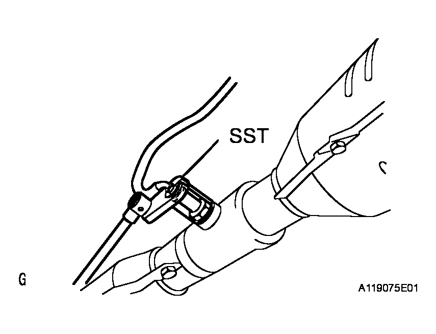

Exhaust Pipe: Removal
- DISCONNECT CABLE FROM NEGATIVE BATTERY TERMINAL CAUTION: Wait at least 90 seconds after disconnecting the cable from the negative (-) battery terminal to prevent airbag and seat belt pretensioner activation.
- REMOVE SHIFT LEVER KNOB (for Manual Transaxle)
- REMOVE REAR CONSOLE BOX (See REMOVAL )
- REMOVE FRONT FLOOR PANEL BRACE
- Remove the 2 bolts and floor panel brace.
- REMOVE TAILPIPE
- Remove the bolt and clamp.
- Disconnect the 2 exhaust pipe supports, and remove the tailpipe and gasket.
- REMOVE FRONT EXHAUST PIPE
- Disconnect the 2 heated oxygen sensor connectors.
- Remove the grommet.
- Remove the 2 bolts and 2 compression springs.
- Disconnect the 2 exhaust pipe supports, and remove the front exhaust pipe.
- Remove the gasket from the exhaust manifold.
- REMOVE HEATED OXYGEN SENSOR (for Bank 1 Sensor 1)
- Using SST, remove the sensor from the front exhaust pipe.
SST 09224-00010
- Using SST, remove the sensor from the front exhaust pipe.
- REMOVE HEATED OXYGEN SENSOR (for Bank 1 Sensor 2)
- Using SST, remove the sensor from the front exhaust pipe.

Courtesy of © TOYOTA, LICENSE AGREEMENT TMS1002SST 09224-00010
- Using SST, remove the sensor from the front exhaust pipe.